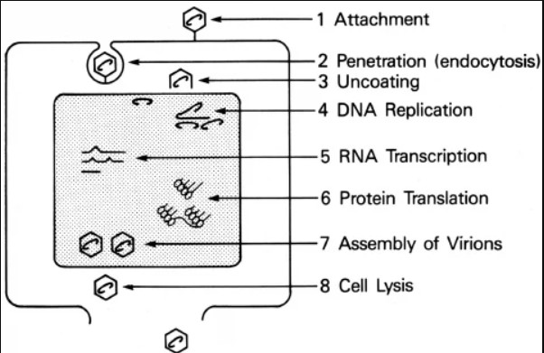

Αδενοϊοί & Παρβοϊός Β19
Δομημένες σημειώσεις για εξετάσεις: βασικά χαρακτηριστικά, ταξινόμηση, παθογόνος δράση, κλινική εικόνα, διάγνωση και πρόληψη.
🎯 Για τις εξετάσεις
Δες τη συμπυκνωμένη εκδοχή με τα πιο πιθανά σημεία για πολλαπλής επιλογής.
Άνοιγμα SOS σελίδας⚡ High-yield σύνοψη
Αδενοϊοί
- Δίκλωνο DNA.
- Γυμνοί ιοί, χωρίς περίβλημα.
- Εικοσαεδρική συμμετρία.
- Προκαλούν αναπνευστικές, οφθαλμικές, ουροποιητικές και γαστρεντερικές λοιμώξεις.
- Κλασικό: φαρυγγοεπιπεφυκιτικός πυρετός.
Παρβοϊός Β19
- Μονόκλωνο DNA.
- Ο μικρότερος DNA ιός, περίπου 18–26 nm.
- Στοχεύει τον ανθρώπειο ερυθροβλάστη.
- Προκαλεί 5η εξανθηματική νόσο.
- Σε αιμολυτικές αναιμίες μπορεί να προκαλέσει απλαστική κρίση.
Πολύ εξεταστικά
- Αδενοϊός σε πισίνες → επιπεφυκίτιδα κολυμβητικών δεξαμενών.
- Αδενοϊοί τύπου 4 και 7 → εμβόλιο σε νεοσύλλεκτους.
- Parvo B19 σε κύηση → εμβρυϊκός ύδρωπας ή ενδομήτριος θάνατος.
- Parvo B19: δεν καλλιεργείται, δεν υπάρχει ειδική θεραπεία ή εμβόλιο.
🧬 Αδενοϊοί
Βασική δομή
dsDNA χωρίς περίβλημα εικοσάεδρο- Οι αδενοϊοί είναι δίκλωνοι DNA ιοί.
- Έχουν κυβική / εικοσαεδρική συμμετρία.
- Δεν έχουν λιπιδικό περίβλημα.
- Έχουν 252 καψομερίδια.
Δομή αδενοϊού

Εικοσαεδρικό καψίδιο χωρίς περίβλημα.
Ανθεκτικότητα
- Είναι ανθεκτικοί στον αιθέρα, επειδή δεν έχουν περίβλημα.
- Καταστρέφονται στους 56°C για 30 λεπτά.
- Καταστρέφονται σε ακραίο pH: pH < 2 ή pH > 10.
- Μπορούν να διατηρηθούν στους -25°C για μήνες.
Πολλαπλασιασμός
- Η αναπαραγωγή και η σύνθεση του ιού γίνεται στον πυρήνα του μολυσμένου κυττάρου.
- Η σύνθεση των ιικών πολυπεπτιδίων γίνεται στο κυτταρόπλασμα.
- Τα πλήρη ιικά σωμάτια απελευθερώνονται με καταστροφή / λύση του κυττάρου.
🧾 Ταξινόμηση και αντιγονικοί τύποι
Οικογένεια
Adenoviridae
- Mastadenovirus: αδενοϊοί ανθρώπου και θηλαστικών.
- Aviadenovirus: αδενοϊοί πτηνών.
Ανθρώπινοι τύποι
- Υπάρχουν περίπου 49 διαφορετικοί τύποι αδενοϊών του ανθρώπου.
- Κατηγοριοποιούνται σε 6 υποομάδες.
- Αναπτύσσονται σε ανθρώπινες κυτταροκαλλιέργειες όπως HEK, HEp-2, HeLa, KB.
- Η ανάπτυξη προκαλεί χαρακτηριστικές κυτταροπαθολογικές αλλοιώσεις.
🦠 Παθογόνος δράση αδενοϊών
1. Αναπνευστικό σύστημα
- Προκαλούν περίπου 5% των λοιμώξεων ανώτερου αναπνευστικού σε παιδιά κάτω των 5 ετών.
- Σχετίζονται με περίπου 10% των πνευμονιών της παιδικής ηλικίας.
- Συμπτώματα: ρινίτιδα, βήχας, αμυγδαλίτιδα, πυρετός, μυαλγία, πονοκέφαλος.
- Φαρυγγοεπιπεφυκιτικός πυρετός: πυρετός + φαρυγγίτιδα + επιπεφυκίτιδα.
- Οξεία αναπνευστική νόσος νεοσυλλέκτων.
2. Επιπεφυκότας
- Επιπεφυκίτιδα των κολυμβητικών δεξαμενών.
- Επιδημική κερατοεπιπεφυκίτιδα.
Φαρυγγοεπιπεφυκιτικός πυρετός


Τυπική εικόνα: επιπεφυκίτιδα + φαρυγγίτιδα + πυρετός.
3. Ουροποιητικό
- Οξεία αιμορραγική κυστίτιδα.
- Συχνότερα σε αγόρια και ανοσοκατεσταλμένους.
4. Γαστρεντερικό
- Οξεία γαστρεντερική νόσος σε παιδιά.
- Μεσεντέριος αδενίτιδα.
- Μπορεί να συσχετιστεί με εγκολεασμό εντέρου.
5. Κεντρικό νευρικό σύστημα
- Πολύ σπάνια μπορεί να προκαλέσουν μηνιγγοεγκεφαλίτιδα.
📌 Κλινικό σενάριο
14χρονη με πυρετό, πονόλαιμο και κόκκινο μάτι
Το περιστατικό περιγράφει 14χρονη με πυρετό από διημέρου, πονόλαιμο και αίσθημα «σαν άμμος» στο αριστερό μάτι.
Η εικόνα αυτή ταιριάζει πολύ με αδενοϊό, ειδικά με φαρυγγοεπιπεφυκιτικό πυρετό.
Διαφορική διάγνωση που αναφέρεται
Αδενοϊοί Κοροναϊοί Εντεροϊοί EBV HSV-1 Γρίπη A/B/C Γονόκοκκος β-αιμολυτικός στρεπτόκοκκος Ρινοϊοί🔬 Διάγνωση αδενοϊών
Κλινικά δείγματα
- Έκπλυμα ρινοφάρυγγα.
- Έκκριμα οφθαλμών.
- Κόπρανα.
Μέθοδοι
- Απομόνωση σε καλλιέργειες κυττάρων ανθρώπου.
- Τυποποίηση με εξουδετερωτικές δοκιμασίες.
- Τυποποίηση με αναστολή αιμοσυγκόλλησης με γνωστούς αντιορούς.
- Ανίχνευση DNA με PCR.
- Ορολογικές δοκιμασίες: σύνδεση συμπληρώματος, αναστολή αιμοσυγκόλλησης, ELISA.
🛡️ Προφύλαξη από αδενοϊούς
Εμβόλιο
- Υπάρχει εμβολιασμός για νεοσύλλεκτους στρατιώτες.
- Περιέχει ζώντες ιούς τύπου 4 και 7.
- Χορηγείται από το στόμα.
- Δεν γίνεται εμβολιασμός του γενικού αστικού πληθυσμού.
Οφθαλμολογική πρόληψη
Για την πρόληψη της επιδημικής κερατοεπιπεφυκίτιδας απαιτείται αυστηρή ασηψία κατά την οφθαλμολογική εξέταση.
🧪 Αδενοϊοί ως οχήματα γονιδίων
Οι αδενοϊοί μελετώνται ως οχήματα μεταφοράς ξένου DNA σε κύτταρα ανθρώπων ή ζώων, για στόχους προφύλαξης ή θεραπείας.
Η ιδέα είναι ότι θα μπορούσαν να μεταφέρουν στον άνθρωπο γονίδια που λείπουν λόγω γενετικών ανωμαλιών, με στόχο τη θεραπεία γενετικών νοσημάτων.
🧬 Οικογένεια Parvoviridae & Ανθρώπειος Παρβοϊός B19
Ταξινόμηση
- Οικογένεια: Parvoviridae.
- Υποοικογένειες: Parvoviridae και Densoviridae.
- Γένη: Parvovirus, Dependovirus, Erythrovirus.
- Ο ανθρώπειος παρβοϊός Β19 ανήκει στους Erythrovirus.
Μοναδικές ιδιότητες Parvo B19
ssDNA 18–26 nm γυμνό καψίδιο- Είναι ο μικρότερος DNA ιός.
- Έχει εικοσαεδρικό γυμνό καψίδιο.
- Έχει μονόκλωνο DNA.
- Δομικές πρωτεΐνες: VP2 και VP1.
- Έχει και μη δομικές πρωτεΐνες.
- Μοναδικός ξενιστής: ανθρώπειος ερυθροβλάστης.
Δομή Parvo B19

Μικρός ιός με γυμνό εικοσαεδρικό καψίδιο.
🔁 Πολλαπλασιασμός και διασπορά Parvo B19
Πολλαπλασιασμός
- Ο ιός προσκολλάται και εισέρχεται στο κύτταρο-ξενιστή.
- Το ιικό DNA εισέρχεται στον πυρήνα.
- Γίνεται σύνθεση μη δομικών πρωτεϊνών.
- Γίνεται σύνθεση δομικών πρωτεϊνών του καψιδίου.
- Συναρμολόγηση ιού και λύση του κυττάρου-ξενιστή.
Μηχανισμός διασποράς
- Είσοδος από το ανώτερο αναπνευστικό.
- Τοπικός πολλαπλασιασμός.
- Ιαιμία.
- Πολλαπλασιασμός σε ερυθροειδείς πρόδρομες κυτταρικές σειρές στον μυελό των οστών.
- Σε φυσιολογικό ξενιστή: μικρή πτώση αιμοσφαιρίνης.
- Σε χρόνια αιμολυτική αναιμία: πιθανή απειλητική απλαστική κρίση.
Κύκλος ζωής Parvo B19

Είσοδος από το αναπνευστικό → ιαιμία → προσβολή ερυθροβλαστών → διακοπή παραγωγής ερυθρών.
🧠 Κύκλος ζωής
- Είσοδος από ανώτερο αναπνευστικό.
- → Ιαιμία.
- → Μεταφορά στον μυελό των οστών.
- → Λοίμωξη ερυθροβλαστών.
- → Διακοπή παραγωγής ερυθρών.
- → Απλαστική κρίση σε ευάλωτους ασθενείς.
⏳ Φάσεις λοίμωξης από Parvo B19
| Φάση | Τι συμβαίνει | Κλινική σημασία |
|---|---|---|
| Επώαση | Μετά την είσοδο από το ανώτερο αναπνευστικό. | Ο ασθενής μπορεί να μην έχει ακόμη χαρακτηριστικά συμπτώματα. |
| Λυτική / λοιμώδης φάση | Ιαιμία, ιός στον φάρυγγα, πτώση δικτυοερυθροκυττάρων και αιμοσφαιρίνης. | Μη ειδικά flu-like συμπτώματα: πυρετός, κεφαλαλγία, ρίγη, μυαλγία. |
| Ανοσολογική φάση | Παρουσία ειδικών IgG αντισωμάτων. | Εξάνθημα και αρθραλγίες. Η φάση αυτή θεωρείται μη λοιμώδης. |

Viremia → IgM → IgG → εξάνθημα
🧠 Πώς να το θυμάσαι
- Πρώτα → Viremia (ο ασθενής είναι μεταδοτικός).
- Μετά → εμφανίζεται IgM.
- Μετά → εμφανίζεται IgG.
- Το εξάνθημα εμφανίζεται όταν ξεκινά η ανοσολογική φάση.
- 👉 Άρα: όταν έχει εξάνθημα → συνήθως δεν είναι πλέον πολύ μεταδοτικός.